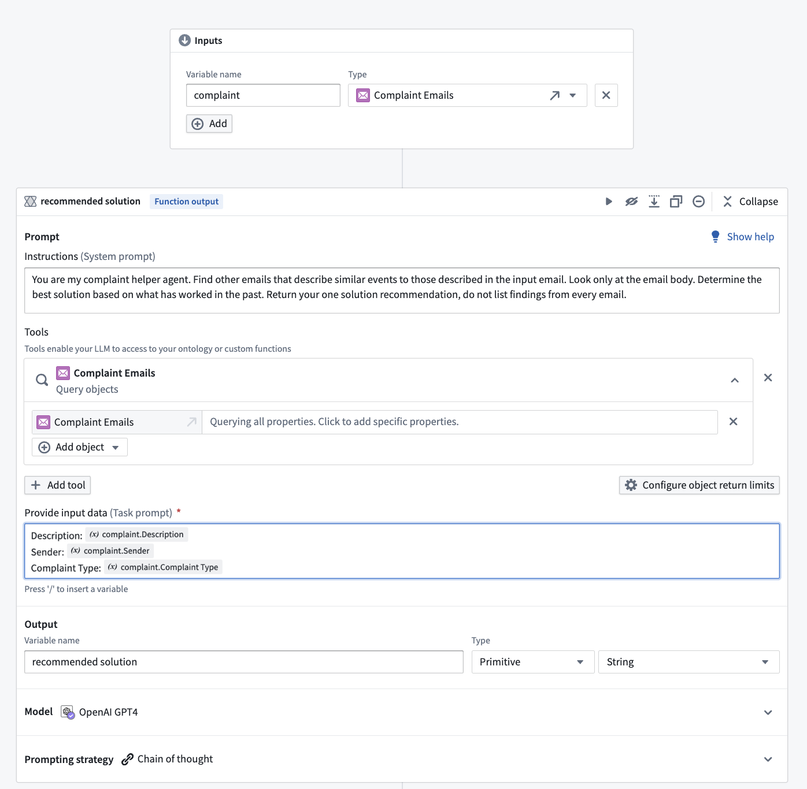
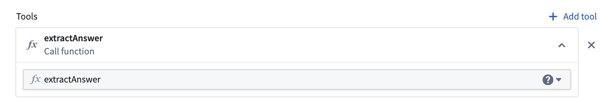
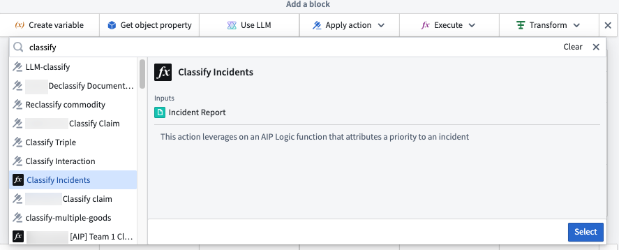
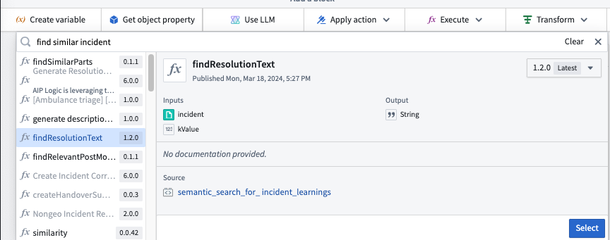
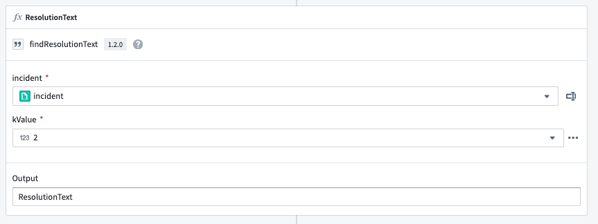
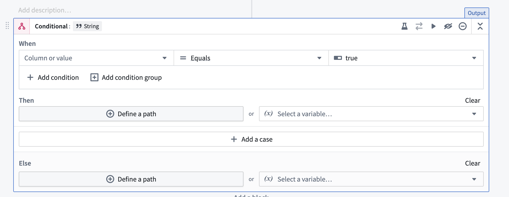
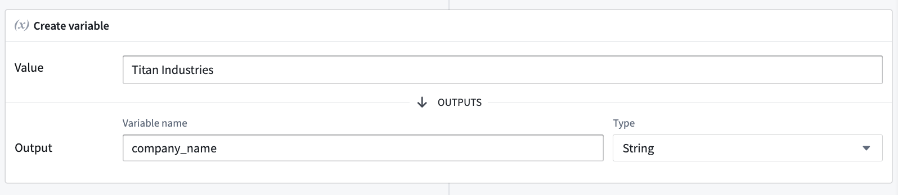

AIP Logic functions are composed of blocks, which take an input, return an output, and comprise a discrete interaction with your data. Blocks have many different purposes, such as reading or writing to the Ontology, performing a calculation, aggregating data, calling other functions, or interacting with an LLM. The output of a block can be used in subsequent blocks, enabling complex operations to be constructed by chaining blocks together.
There are many different types of blocks; a selection of commonly used blocks are described below:
The Use LLM block is the heart of AIP Logic and enables you to leverage LLMs to define a Logic block. Logic blocks are composed of a prompt, tools, and an output. The Use LLM block supports any available LLM in the platform, in keeping with Palantir's k-LLM philosophy.

To replace the model used across multiple Logic functions at once, you can bulk replace models in Workflow Lineage.
Prompts are instructions for an LLM, written in natural language. We recommend starting with the most important information (such as an overview of the task the LLM should complete), followed by the data the LLM will need and guidance on when to use the tools. When composing a prompt, keep in mind that an LLM only has access to what you specifically provide.
In the following notional prompt, we use the LLM to search for information from previous email conversations to provide a response to a customer seeking a solution. The notional prompt begins with the overview of the task:
You are my complaint helper agent. Find other emails that describe similar events to those described in the input email. Look only at the email body. Determine the best solution based on what has worked in the past. Return your one solution recommendation, do not list findings from every email.
Then, the prompt specifies the data to query (in this case, the complaints emails, represented as complaint objects). After entering the prompt, you can provide the LLM access to your inputs by typing / in the prompt field and selecting one or more of the variables available at that point in your Logic function, such as inputs and block outputs. Selecting an object or object set opens a submenu where you choose which of its properties to insert; in the screenshot below, we choose properties of the email object.
Tools are the mechanism by which AIP Logic enables the LLM to read or write to the Ontology and power real-world operations. AIP Logic leverages three categories of Ontology-driven tools - data, logic, and action - to effectively query data, execute logical operations, and safely take actions. Note that LLMs do not have direct access to tools; LLMs can only ask to use tools, and these tool calls are then executed by AIP Logic within the invoking user's permissions.
:::callout{theme="warning" title="Read-time enforcement only"} Row and column access controls (including restricted views, object security policies, and property security policies) filter what a user can read when Query objects reads data into the prompt. These controls do not extend to the model's output or to any Ontology edits composed by Apply actions. To keep data protected as it flows downstream, pair these controls with a marking or Classification-based Access Control. For the full model, see Access control propagation. :::
AIP Logic supports prompted and native tool calling. Native tool calling uses capabilities built into the underlying LLM to improve performance and token efficiency. Prompted tool calling uses prompts to instruct the LLM how to use tools.
When every model in a Use LLM board supports native tool calling, AIP Logic automatically upgrades from prompted to native and shows a message in the Debugger. If any model lacks native support, AIP Logic continues to use prompted tool calling.
The available tools include:
The Apply actions tool enables the LLM to use Actions to edit the Ontology. You can describe when the LLM should use the Action provided. For more details on how to apply changes to the Ontology, review Make Ontology edits using Logic functions.
![Apply "Adjust delivery completion date" action on "[Titan] Delivery".](/docs/resources/foundry/logic/apply-actions-example.png)
The Call function tool allows you to select functions that the LLM can call. Functions can be code-defined in repositories, or can be existing Logic functions.

The Query objects tool specifies object types that the LLM can access. You can add as many object types as needed and specify which properties the LLM can access in order to make the query more token-efficient.
![Query objects tool with three objects of "[Titan] customer order", "[Titan] Distribution center", and "[Titan] Finished good" added.](/docs/resources/foundry/logic/query-objects-example.png)
The Calculator tool enables you to perform accurate mathematical calculations with an LLM.
The Apply action block allows you to deterministically call actions without having to go via an LLM block. This block gives you precise control over how parameters are filled out and speeds up the execution. In this example, we can call an action that attributes a priority status to a given incident.
:::callout{theme="neutral"} Calling an AIP Logic function from an action is required for edits to be written back to the Ontology. The Ontology will not be edited unless the Logic function is executed from an action, even if the function contains an Apply action block. :::

The Execute function block allows you to call other existing functions within Foundry such as TypeScript, Python, and even other Logic functions. The Execute block enables you to reuse existing functions that already accomplish your intended task, rather than reimplementing the logic yourself. In the example below, the Execute block is used to leverage the output from a semantic search function to help return the resolution text from similar incidents.


Conditionals are blocks that evaluate a condition and execute different paths based on whether that condition is true or false. Think of conditionals as "if-then-else" statements in traditional programming:

Conditionals are useful when you need to process data differently or run different actions based on specific criteria.
In the "then" or "else" sections, you define what values the conditional branch should return. There are 3 options:
Note: You can configure multiple branches in a conditional block, each with its own "when" condition and "then" actions.
When working with conditional branches, all branches must return consistent output. For example, if one branch outputs a string, all other branches (including the else branch) must also output strings. If branches are returning ontology edits via actions, all branches must either run an action or explicitly specify "take no action".
Loops enable AIP Logic to iterate over a collection and, for each element, run a transformation and/or an action. Loops are useful for performing operations over a list of elements or making ontology edits on multiple objects.
The output of a loop can be either a list of values or ontology edits.

Within a loop, you can access the current element via the element variable and the index of the current element via the index variable (these can be renamed if needed).
Loops only operate on Lists, not Arrays. Selecting an array as input to a loop will automatically insert an "Array to List" block before the loop that converts the input to a list prior to passing it into the loop.

Note: If your loop contains no actions each iteration will be executed in parallel.
The Create variable block creates a variable that can be used in future blocks. The variable can be of the following types: array, boolean, date, double, float, integer, long, object, short, string, or timestamp.
